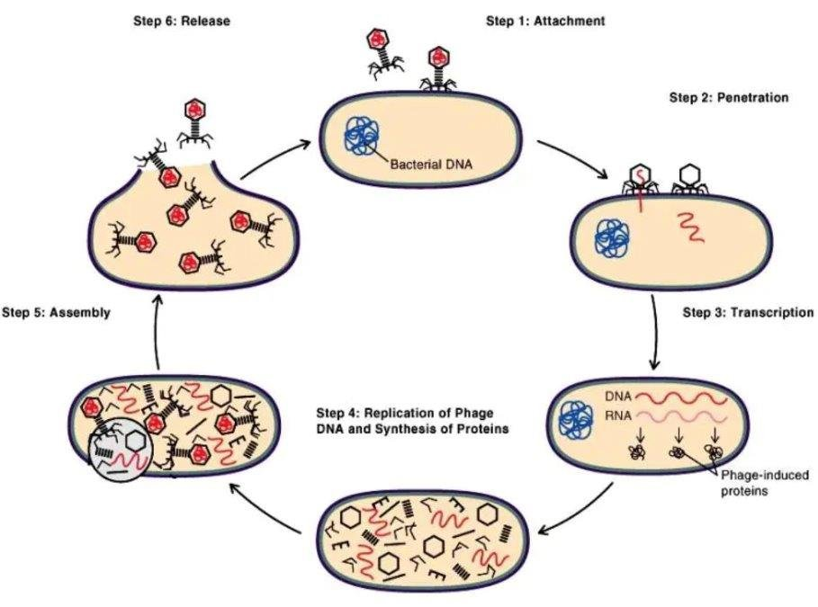
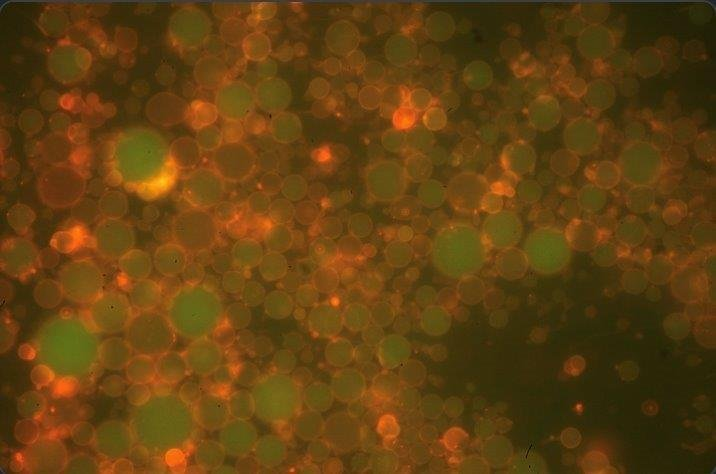
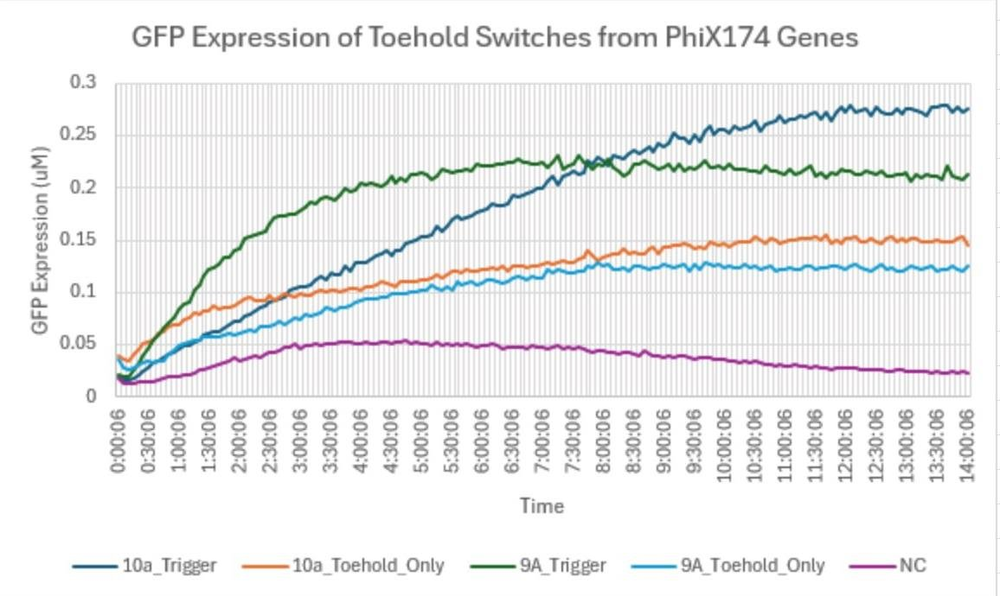

Modeling virus–host interactions with synthetic cells
Build a cell simple enough to understand, make a virus believe it's a real host, and watch what the virus does — with RNA reporters wired in to say which genes fired and when.
The idea
A real E. coli cell has too many moving parts to cleanly attribute anything in a viral life cycle to a specific interaction. A synthetic cell — a liposome containing a cell-free expression system — is a minimal chassis you build deliberately, so whatever happens inside is something you put there.
The goal was to reconstruct the PhiX174 life cycle in such a chassis: attachment, penetration, transcription, replication, assembly, release.

Making the virus recognize the cell
PhiX174 attaches to lipopolysaccharides (LPS) on the E. coli C outer membrane, so a bare POPC liposome is invisible to it. I built a minimal host membrane by embedding LPS into POPC liposomes and confirmed integration by fluorescence imaging — which is what lets the phage treat the synthetic cell as a host at all.

Reporting on viral transcription
To see which viral genes were being transcribed, I designed RNA toehold switches: hairpins that sequester a ribosome binding site until a trigger RNA — here, a viral transcript — opens them and lets a reporter be translated. A good switch is off when it should be off, which is the hard part.

I wrote a NUPACK pipeline to batch-simulate 300+ candidate switches across all 11 viral genes, scoring them on secondary structure and predicted leak, and isolated 10 low-leakage designs. These validated as non-leaky with clean activation at 5 nM : 10 nM trigger ratios.

What came out of it
A synthetic-cell platform with a host-mimicking membrane and a validated set of transcriptional reporters, plus a computational pipeline for designing more of them. I also explored the role of Phi29 DNA polymerase in viral particle production from TX-TL and PURE cell-free systems. Presented at Caltech SURF Seminar Day, 2024.